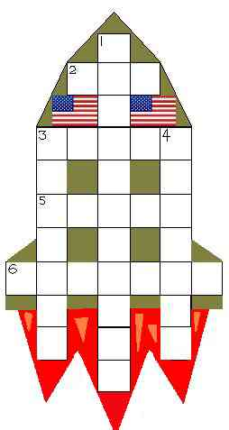

|  |
ACROSS : How to tackle an evil regime? 2. Bush's heart, and a nation of violence... (1.1.1.) 3. ...blindly lead deranged mobs to missiles. (5) 5. (From backward IQ a riddle: which dictatorship to attack?) (5) 6. Cruise Missile visit "restructuring" sufferers. (7) DOWN 1. USA has leading military and assorted technological tackle (but without the French), an excuse for everything, ... (5,6) 3. ... seething sore (in gulf leader) ... (7) 4. ... so what sense is Micah 3:1-11 providing in relation to earth-shattering events? (7) |